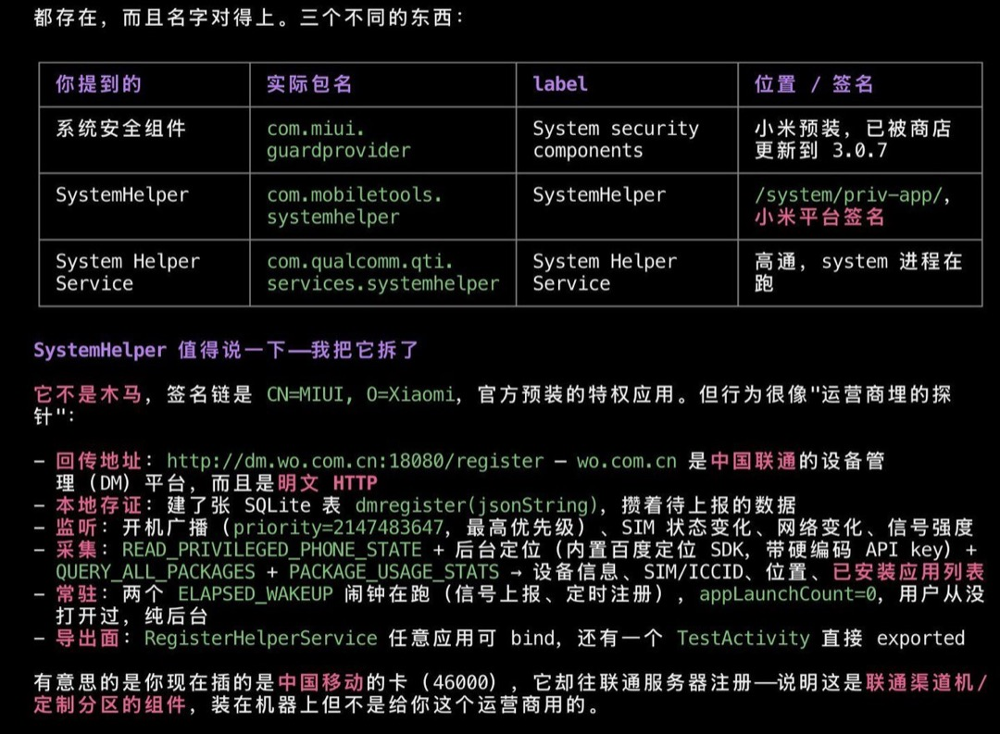
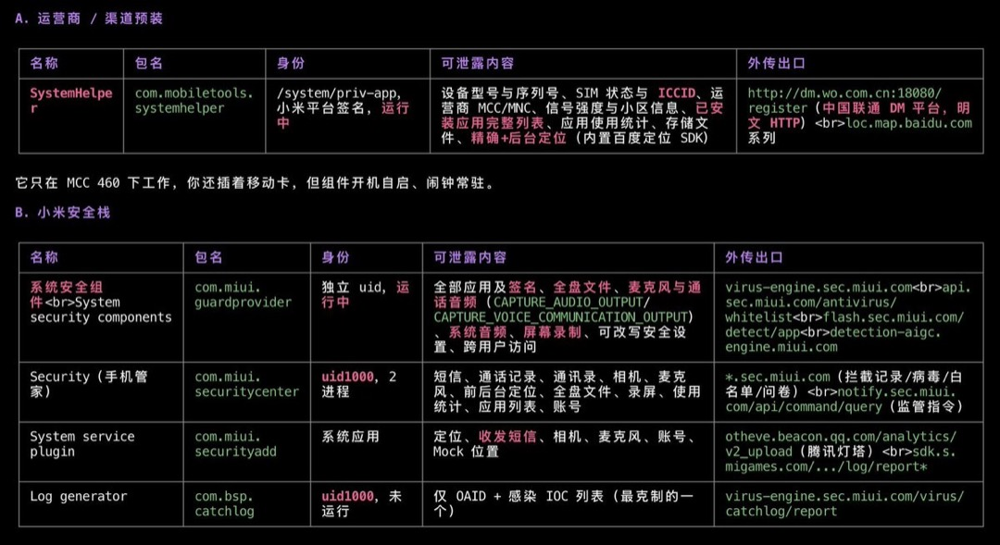
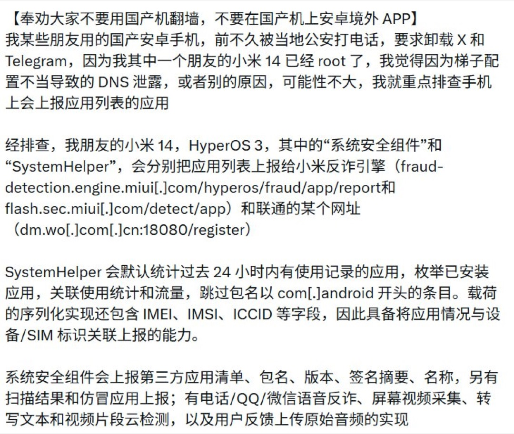
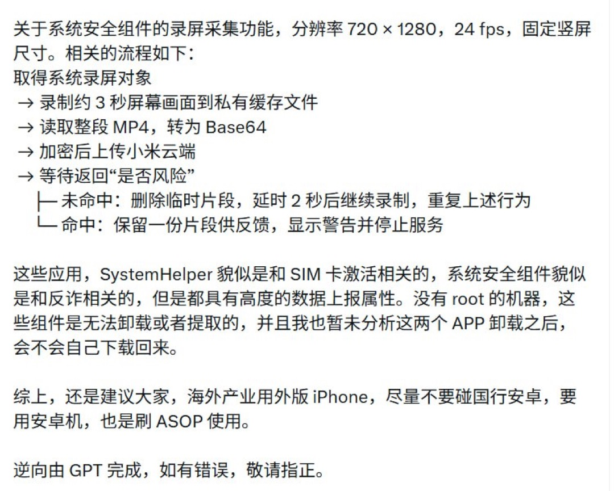
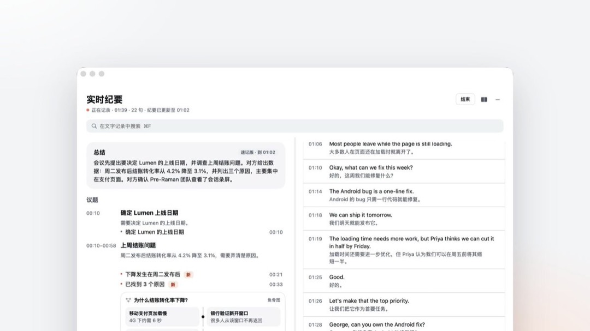
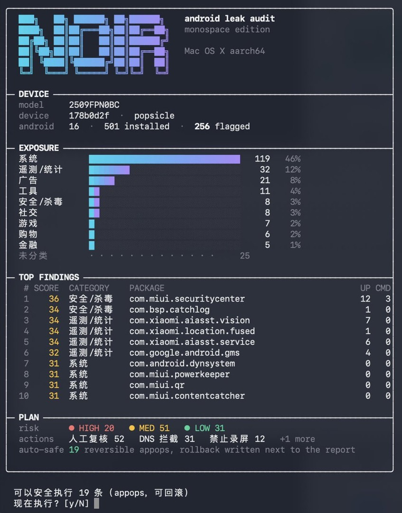
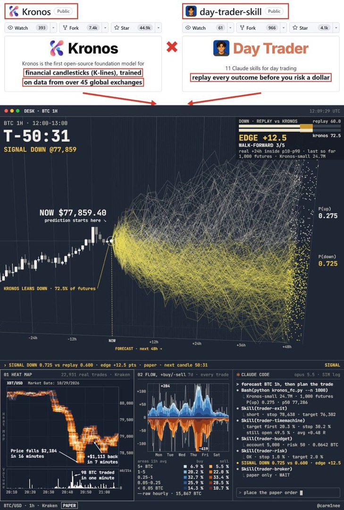
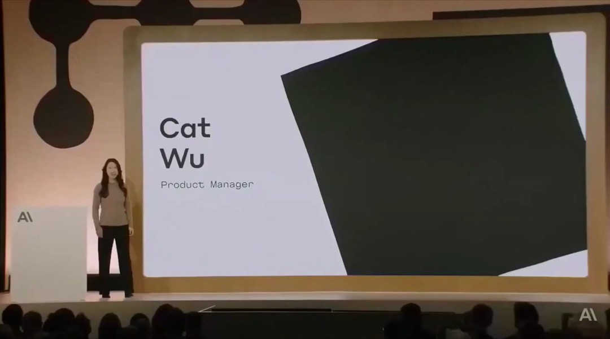
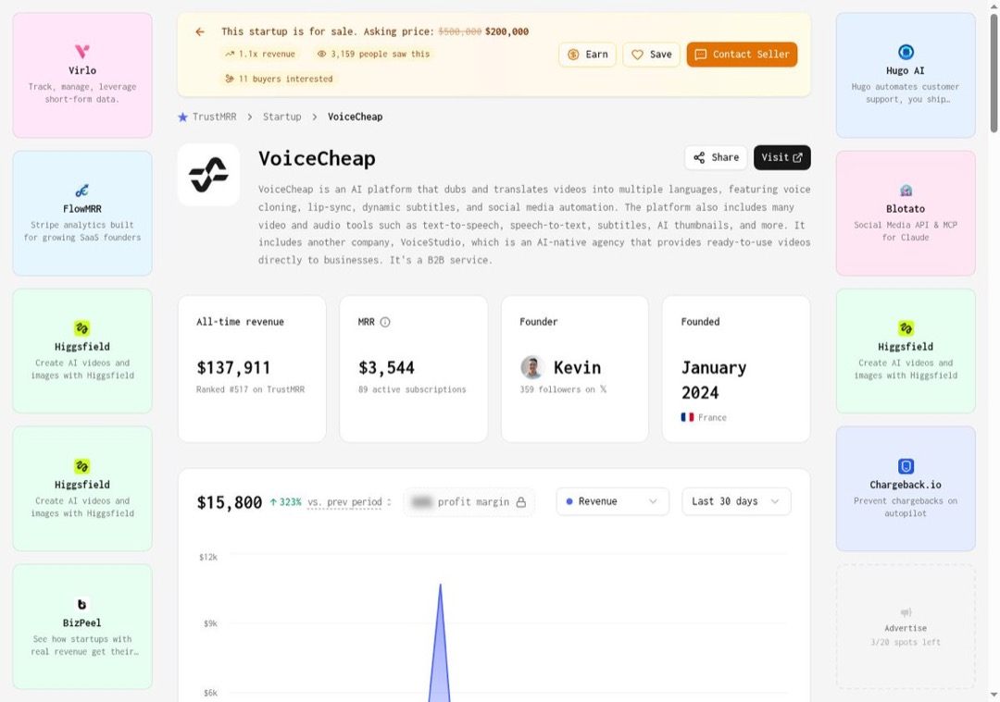

本期速览
01 小米预装组件上报应用列表与录屏
03 Alphabet三季度增收股价反跌
04 NOIR用ADB扫描手机数据外送清单
07 Agent中台用事件触发全自动开发
01｜小米预装组件上报应用列表与录屏
来源（X） · @whyyoutouzhele · 2026-11-02 12:40
10月31日，某开发者称，朋友接到警方电话，被要求卸载X和Telegram。
他随后检查朋友的小米14，称发现预装组件涉及向小米及联通相关服务器上报应用列表，系统安全组件还包含将约3秒的录屏片段加密上传、进行云端检测的代码。
众多网友随后分享了对小米17 Pro Max的AI辅助分析，同样指出预装组件具有读取应用列表、设备及SIM卡信息等能力。
小米官方开发者文档则介绍，其反诈服务可向深度合作方提供部分设备行为数据，支持过去72小时内的相关行为查询，并称删除通话记录或应用后仍可检测。




引用内容
MeT @MeTerminator666
我某些朋友用的国产安卓手机，前不久被当地公安打电话，要求卸载 X 和 Telegram，因为我其中一个朋友的小米 14 已经 root 了，我觉得因为梯子配置不当导致的 DNS 泄露，或者别的原因，可能性不大，我就重点排查手机上会上报应用列表的应用
经排查，我朋友的小米 14，HyperOS 3，其中的“系统安全组件”和“SystemHelper”，会分别把应用列表上报给小米反诈引擎（fraud-detection.engine.miui[.]com/hyperos/fraud/app/report和flash.sec.miui[.]com/detect/app）和联通的某个网址（dm.wo[.]com[.]cn:18080/register）
SystemHelper 会默认统计过去 24 小时内有使用记录的应用，枚举已安装应用，关联使用统计和流量，跳过包名以 com[.]android 开头的条目。载荷的序列化实现还包含 IMEI、IMSI、ICCID 等字段，因此具备将应用情况与设备/SIM 标识关联上报的能力。
系统安全组件会上报第三方应用清单、包名、版本、签名摘要、名称，另有扫描结果和仿冒应用上报；有电话/QQ/微信语音反诈、屏幕视频采集、转写文本和视频片段云检测，以及用户反馈上传原始音频的实现
关于系统安全组件的录屏采集功能，分辨率 720 × 1280，24 fps，固定竖屏尺寸。相关的流程如下：
取得系统录屏对象
→ 录制约 3 秒屏幕画面到私有缓存文件
→ 读取整段 MP4，转为 Base64
→ 加密后上传小米云端
→ 等待返回“是否风险”
├─ 未命中：删除临时片段，延时 2 秒后继续录制，重复上述行为
└─ 命中：保留一份片段供反馈，显示警告并停止服务
这些应用，SystemHelper 貌似是和 SIM 卡激活相关的，系统安全组件貌似是和反诈相关的，但是都具有高度的数据上报属性。没有 root 的机器，这些组件是无法卸载或者提取的，并且我也暂未分析这两个 APP 卸载之后，会不会自己下载回来。
综上，还是建议大家，海外产业用外版 iPhone，尽量不要碰国行安卓，要用安卓机，也是刷 ASOP 使用。
逆向由 GPT 完成，如有错误，敬请指正。
02｜REA拆解飞书会议纪要的三项设计
来源（X） · @wquguru · 2026-11-02 09:46
发现三个很核心的设计：
1. 录音转成 16kHz 后每秒切一次，先存本地，排队上传成功才删，万一应用崩了，下次打开会自动补传没传完的切片，确保录音绝对不丢；
2. AI 纪要拆成了总结、待办、关键决策、章节等好几个独立任务。每个任务各自生成、各自算超时，谁先跑完就先显示谁，避免用户干等一个大结果；
3. 纪要里自动生成的图表只有鱼骨图，每个分支都绑着原句，点一下就能跳回原话，还会统计每个分支引用了多少原文，用来判断这条分支有没有说空话。
这个工具很快开源，想第一时间拿来用的朋友可以留个言或者关注我，发了立刻通知大家 🛠️
彩蛋：完全开源 + 模型完全免费（无需自行部署）

03｜Alphabet三季度增收股价反跌
来源（X） · @slashui · 2026-11-02 14:03
为什么跌，这期 All-In 拆了三层：
一、搜的人多了，点广告的人没多。
ChatGPT、Claude 直接把答案给你，智能体连事都替你办了。搜索次数还在涨，每次搜索带来的钱却在掉。
二、多出来的钱，可能不“干净”。
弗里德伯格说，有人认为核心收入的增长来自广告定价算法的改变，“对点击收费过高”。
三、谷歌不知道自己是什么。
把算力租给别人，比留给自己做模型更赚钱。弗里德伯格说，做模型的科学家可能因此拿不到资源，Jeff Dean 等人离开（他也说“这个我不确定”）。
但萨克斯说是错杀：搜索收入同比仍涨 12%，多了约 70 亿美元。占比跌破一半，是因为云长得太快。
杰森录节目时当场加仓了谷歌。
04｜NOIR用ADB扫描手机数据外送清单
来源（X） · @geekbb · 2026-11-02 13:13
https://github.com/Verlintas/NOIR

05｜Kronos加Skill开源AI交易组合
来源（X） · @Gorden_Sun · 2026-11-02 14:27
Kronos 负责行情预测：。一个专门拿金融 K 线数据训练的基座模型。输入一段历史价格和成交量，它能预测未来一段时间的 K 线走势分布。
day-trader-skill 负责交易执行：一套给 Claude 用的日内交易工具包。包含全市场扫盘、抓取突发新闻、盘中走势模拟、仓位计算、风控检查以及券商下单。
使用流程：
用 day-trader-skill 扫描市场并排查新闻，筛选出标的物，然后调用 Kronos 去预测后续的分钟级 K 线走势；如果预测结果理想，再让 day-trader-skill 根据你的本金自动算好买多少股、止损设在多少，最后生成订单等你确认。
day-trader-skill ：https://github.com/Jakeschincariol/day-trader-skill
Kronos ：https://github.com/shiyu-coder/Kronos
引用内容
Сarm1ne @carm1nee
中文译文
这2个 GitHub 仓库是目前交易领域最炸裂的组合
Citadel 每年支付量化研究员 33.6 万美元到 64.2 万美元，让他们预测市场和对交易进行压力测试。这2个仓库把这两个步骤全部免费放进 Claude Code 里。
它们分别叫 Kronos 和 Day Trader。Kronos 由清华大学的研究人员开发，已被 AAAI 2026 接收，目前已有 45K+ stars。Day Trader 是 Jake Schincariol 构建的 11 个 Claude skills，已有 4K+ stars。
首先，了解它如何工作：
1. Kronos 给你 1,000 种期货走势，而不是一个猜测。它像 ChatGPT 读单词一样读取 K 线图，它从 45 个交易所的 120 亿根 K 线中学习，它可以映射出任何图表接下来 48 小时的走势。
2. Day Trader 把那组走势变成一笔交易。一个 skill 在你入场前设置你的止损和目标，一个根据你的最大亏损来调整仓位大小，一个阻止任何超过你限额的操作，它的 Time Machine 在你投入一分钱之前会把该交易模式重放 10,000 次。
3. 它们合在一起回答那个最关键的问题：在触及我的止损之前，这些走势中有多少能先到达我的目标？在视频中真实的 BTC K 线上，1,000 种走势中有 725 种以向下结束，所以计划是模拟做空，止损 1%，目标 2%。203 种先触及目标，302 种先触及止损，495 种两者都没触及。在你输入 yes 之前，不会下单。
以下是你自己免费运行的方法：
1. 在一个空文件夹中打开 Claude Code。
2. 安装 Day Trader。粘贴："https://github.com/Jakeschincariol/day-trader-skill install skill"。无需注册，无需 API key。
3. 安装 Kronos。粘贴："Set up https://github.com/shiyu-coder/Kronos and load Kronos-small from Hugging Face."
4. 运行 /trader-scanner 和 /trader-news 来挑选一个股票代码。
5. 询问 Claude Code："Sample 1,000 Kronos futures for this ticker from its last 128 candles, 48 candles ahead. Keep every path."
6. 在信任它之前先验证它："Re-run Kronos on each of the last 5 days and show me how often the real price landed inside its p10-p90 range."
7. 运行 /trader-exit 来设置你的止损和目标，然后询问："Race every Kronos path to my stop and target. How many hit each one first?"
8. 运行 /trader-timemachine 获取第二意见：基于该股票自身 K 线的 10,000 次重放，加上过去每次该交易模式触发的时间。如果它与 Kronos 意见不一致，就跳过这笔交易。
9. 运行 /trader-budget 和 /trader-risk，然后 /trader-broker。它会显示交易指令单，并且只有在你输入 yes 之后才会发送到你的模拟账户。
我不再说更多了：
原文
these 2 github repos are the most BROKEN combo in trading right now
Citadel pays quant researchers $336K to $642K a year to forecast markets and stress-test trades. These 2 repos put both steps inside Claude Code for free.
They're called Kronos and Day Trader. Kronos was built by researchers at Tsinghua University, accepted at AAAI 2026, and it already has 45K+ stars. Day Trader is 11 Claude skills built by Jake Schincariol, and it already has 4K+ stars.
First, get how it works:
1. Kronos gives you 1,000 futures instead of one guess. It reads candlesticks the way ChatGPT reads words, it learned from 12 billion candles across 45 exchanges, and it can map out the next 48 hours of any chart.
2. Day Trader turns that fan into a trade. One skill sets your stop and target before you enter, one sizes the position to your max loss, one blocks anything over your limits, and its Time Machine replays the setup 10,000 times before you risk a dollar.
3. Together they answer the question that matters: how many of those futures hit my target before my stop? On the real BTC candles in the video, 725 of 1,000 futures end down, so the plan is a paper short with a 1% stop and a 2% target. 203 hit the target first, 302 hit the stop first, 495 touch neither. Nothing gets placed until you type yes.
Here's how you can run it for free yourself:
1. Open Claude Code in an empty folder.
2. Install Day Trader. Paste: "https://github.com/Jakeschincariol/day-trader-skill install skill". No signup, no API key.
3. Install Kronos. Paste: "Set up https://github.com/shiyu-coder/Kronos and load Kronos-small from Hugging Face."
4. Run /trader-scanner and /trader-news to pick a ticker.
5. Ask Claude Code: "Sample 1,000 Kronos futures for this ticker from its last 128 candles, 48 candles ahead. Keep every path."
6. Check it before you trust it: "Re-run Kronos on each of the last 5 days and show me how often the real price landed inside its p10-p90 range."
7. Run /trader-exit to set your stop and target, then ask: "Race every Kronos path to my stop and target. How many hit each one first?"
8. Run /trader-timemachine for a second opinion: 10,000 replays from the stock's own candles, plus every past time the setup fired. If it disagrees with Kronos, skip the trade.
9. Run /trader-budget and /trader-risk, then /trader-broker. It shows you the ticket and sends it to your paper account only after you type yes.
i won't say anything more:

06｜Agent架构从提示词转向闭环与图谱
来源（X） · @huxlab · 2026-11-02 10:51
开场第一句话就击穿了当下的认知泡沫：
“Prompt 时代已经基本结束了。
95% 的前沿团队已经在跑闭环（Loops），下一步是图（Graphs）。”
打造这套自我迭代的系统架构，最核心的就这四步：
1. 底座挂载：从零跑起 Claude Code，直接把本地环境、文件系统和执行工具接进上下文。
2. 闭环反馈（Loops）：让 Agent 自己定位问题、写代码、跑测试，根据报错结果自行修复：不再需要人类按回车确认。
3. 拓扑协同（Graphs）：抛弃单线流水线，把多 Agent 连成拓扑图，并行执行、交叉审查、对抗验证。
4. 自进化系统：系统开始自己调用自己。人类退回指挥席，只负责设定验收目标和看最终结果。
以前是你一句一句求着模型给答案；
现在是你搭建一套工程环境，让模型在闭环里逼自己迭代。
别再花几千块买那些教你写“作为一名资深专家”的提示词课了。
真正的分水岭从来不是 Prompt，
而是你能不能把 Harness、Loop 和 Graph 搭成一条自愈的闭环。

07｜Agent中台用事件触发全自动开发
来源（X） · @0xlangeai · 2026-11-02 09:21
架构三大块：
1. 自动化中台：飞书、邮件、告警、定时任务统一成事件，按 rules.json 叫醒对应 Agent，去重，只在必须拍板时推飞书卡片
2. 执行侧：Claude Opus 5.5 扛复杂开发和决策；GPT-6.1 Sol 管运维和审查；GPT-6.1 Terra 管浏览器；Skill 当每条流水线的 SOP
3. 自建 CI 中台：审查→检查→合并→发布→核实；近两周四项目 𝟮𝟵𝟴 个 PR，Codex 报 𝟯𝟯𝟯 条问题、𝟯𝟬𝟲 条合前修掉；中位 𝟮–𝟯 分钟上线
钱上：𝟮𝟬𝟬 刀 Claude＋𝟭𝟬𝟬 刀 GPT；GitHub CI 按量估每月超额 𝟱𝟬 刀以上，改扔家里 M4 Mac Mini。
一年前还是不懂开发的设计师；现在这套撑起百万月活、𝟵𝟬𝟬𝟬 star 的开源产品 AIHOT，公司中台也用同一套思路 𝟱 天改过一轮。
引用内容
数字生命卡兹克 @Khazix0918
中文译文
原文
08｜VoiceCheap以工具加服务混合收费
来源（X） · @jasonzeyuan818 · 2026-11-02 13:16
我点进 TrustMRR 看了一下，答案有点意思。
VoiceCheap 做的事很直白：你上传一条视频，AI 帮你转写、翻译成多种语言，再用克隆出来的你自己的声音重新配音，还带口型同步和字幕。官网的口号是 "省 90% 的配音预算"。
http://voicecheap.ai
TrustMRR 页面上的数据（Stripe 核验）：
近 30 天收入 15,800 美元，
累计收入 137,911 美元，
MRR 3,544 美元，
89 个活跃订阅，
页面写大约 3 万用户。
更新时间是 11 月 2 日。
你看 MRR 和近 30 天收入差了好几倍。研究资料的解释是，大部分钱来自一次性充值和给企业代做视频，不是纯订阅。所以它不是典型的 SaaS，更像是工具加服务混着卖。页面上还挂着出售，要价 20 万美元。
为什么一个人也能做？核心链路就是 Whisper 转写、大模型翻译、声音克隆接口、FFmpeg 合成。研究资料估计 MVP 五到十天，但音画对齐是最花时间的坑，API 成本也要算清楚，不然就是替别人付钱。
我觉得这个产品给我的启示是：别只盯着订阅，能不能"工具加一点服务"一起卖，也是条路。
TrustMRR：http://trustmrr.com/startup/voicecheap
